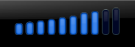

PowerDVD Linux
Archivierte Anleitung
Dieser Artikel wurde archiviert, da er - oder Teile daraus - nur noch unter einer älteren Ubuntu-Version nutzbar ist. Diese Anleitung wird vom Wiki-Team weder auf Richtigkeit überprüft noch anderweitig gepflegt. Zusätzlich wurde der Artikel für weitere Änderungen gesperrt.
Zum Verständnis dieses Artikels sind folgende Seiten hilfreich:
PowerDVD Linux von CyberLink  unterstützt die Wiedergabe von DVDs mit Menü-Navigation und Untertiteln. Zur Optimierung der Audio- und Videoqualität kommt die TrueTheater™ Technology zum Einsatz. Als Quelle können DVDs, VCDs, MP3-CDs, CD-ROMs und Audio-CDs verwendet werden. Die kommerzielle Software ist nur für OEM-Kunden oder über Canonicals Online-Shop erhältlich.
unterstützt die Wiedergabe von DVDs mit Menü-Navigation und Untertiteln. Zur Optimierung der Audio- und Videoqualität kommt die TrueTheater™ Technology zum Einsatz. Als Quelle können DVDs, VCDs, MP3-CDs, CD-ROMs und Audio-CDs verwendet werden. Die kommerzielle Software ist nur für OEM-Kunden oder über Canonicals Online-Shop erhältlich.
Als Alternativen gibt es die kommerziellen Produkte Fluendo DVD Player und LinDVD.
 | |
| Hauptmenü | DVD-Menü |
Installation¶
Nach dem Erwerb der Software im Canonical Store  kann man diese anschließend von Canonical software download
kann man diese anschließend von Canonical software download  herunterlademn. Abschließend muss das Programmpaket pdvd_VERSION_i386.deb noch installiert werden [1]. Nachdem man pdvd als Standard-DVD-Player ausgewählt hat, kann man das Programm über "Anwendungen -> Unterhaltungsmedien -> CyberLink PowerDVD" starten.
herunterlademn. Abschließend muss das Programmpaket pdvd_VERSION_i386.deb noch installiert werden [1]. Nachdem man pdvd als Standard-DVD-Player ausgewählt hat, kann man das Programm über "Anwendungen -> Unterhaltungsmedien -> CyberLink PowerDVD" starten.
Hinweis:
Eine Demoversion ist nicht verfügbar. Bevor man die Software kauft, sollten die Installationsanweisungen und FAQs (PDF) aufmerksam gelesen werden.
Bedienung¶
| PowerDVD Linux | |
| Schaltfläche(n) | Beschreibung |
| Steuerung des Players | |
| Lautstärke niedriger / aus / höher | |
| Disc-Menü aufrufen / Untertitel, Sprache und Winkel wählen | |
|  | Lautstärkeregler |
Nautilus¶
Mit dem Dateimanager einen Rechtsklick  auf die eingebundene DVD ausführen und über "Mit >>CyberLink PowerDVD<< öffnen" die Wiedergabe starten, falls das Programm nicht als Standard-DVD-Player festgelegt wurde.
auf die eingebundene DVD ausführen und über "Mit >>CyberLink PowerDVD<< öffnen" die Wiedergabe starten, falls das Programm nicht als Standard-DVD-Player festgelegt wurde.
- Erstellt mit Inyoka
-
 2004 – 2017 ubuntuusers.de • Einige Rechte vorbehalten
2004 – 2017 ubuntuusers.de • Einige Rechte vorbehalten
Lizenz • Kontakt • Datenschutz • Impressum • Serverstatus -
Serverhousing gespendet von